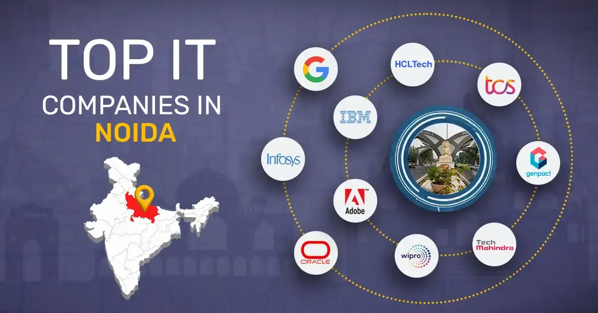
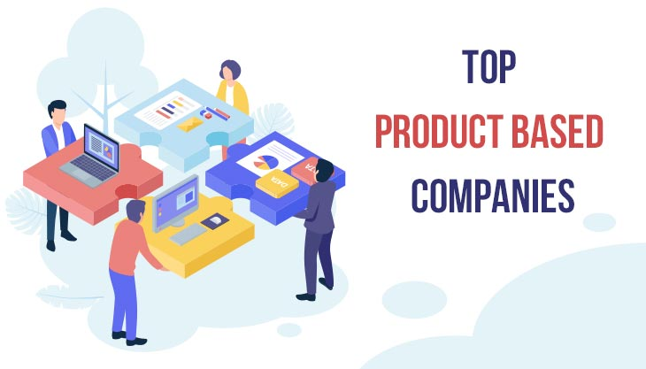
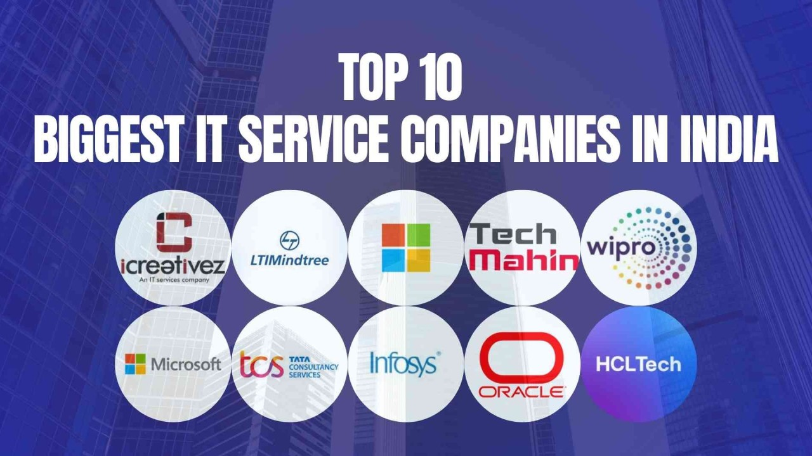
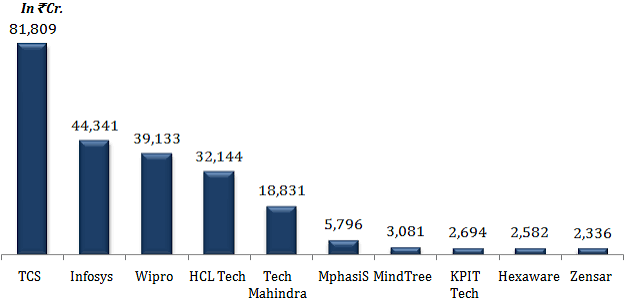

CHENNAI
Chennai is the SaaS capital of India and its second-largest IT hub, generating over ₹2.5 lakh crore ($30B+) in tech exports. With over 5,000 registered tech and ITES companies, it employs over 450,000 professionals. Most tech firms are clustered along the Old Mahabalipuram Road (OMR) corridor.Key IT Sectors & EmployersChennai is especially known as the "SaaS Capital of India". Local homegrown unicorns like Zoho, Freshworks, and Chargebee have pioneered the city’s deep-tech and software-as-a-service ecosystem.Alongside emerging product startups, the city serves as a major global delivery center for IT services and consulting. Major global and domestic firms with large operations here include:

Global Services & Consulting: Tata Consultancy Services (TCS), Cognizant, Infosys, Capgemini, HCL Technologies, and Wipro.Cloud & Product Giants: Amazon Web Services (AWS), PayPal, and IBM.For a complete breakdown of IT service providers and to find potential career opportunities, you can refer to the Top IT Companies in Chennai overview
HYDRABAD
Hyderabad is one of India's premier IT hubs, anchored primarily in specialized zones like HITEC City, Gachibowli, and the Financial District. The city hosts a mix of global tech giants, multinational IT services firms, and agile, high-growth software and engineering companies.Global Tech Giants & Anchor Comp
 Global Tech Giants & Anchor CompaniesMicrosoft: Home to its India Development Center (IDC), heavily focused on AI, cloud, and engineering.Google: Operates one of its largest corporate campuses outside the US, handling core product development and cloud operations.Amazon: Maintains massive corporate delivery centers supporting global retail, Web Services (AWS), and customer operations.ServiceNow: Expanding its footprint with a focus on cloud-based enterprise platforms and AI.
Global Tech Giants & Anchor CompaniesMicrosoft: Home to its India Development Center (IDC), heavily focused on AI, cloud, and engineering.Google: Operates one of its largest corporate campuses outside the US, handling core product development and cloud operations.Amazon: Maintains massive corporate delivery centers supporting global retail, Web Services (AWS), and customer operations.ServiceNow: Expanding its footprint with a focus on cloud-based enterprise platforms and AI.
BANGLORE

Whitefield: Known for the International Tech Park Bangalore (ITPB) and LTIMindtree, which serves as a major base for global technology service operations.Outer Ring Road (ORR): A dense IT corridor stretching from Marathahalli to Hebbal, featuring large corporate campuses for tech giants like Cisco and IBM.Mahadevapura: Home to mega campuses such as Google's 1.6 million sq. ft. 'Ananta' office, which houses over 5,000 employees working on AI, search, and Android development.For a comprehensive view of current career opportunities across these specific hubs, you can browse open listings directly on LinkedIn IT Companies Bangalore Jobs.If you are looking for specific opportunities, let me know:Are you interested in service-based or product-based/SaaS companies?What is your years of experience and domain/tech stack (e.g., Java, Cloud, Data Science, AI)?Do you prefer companies located in a specific tech park or zone?I can provide tailored recommendations or guide you on the hiring trends for your profile

PRODUCT
eneric products developed by IT companies Websites Mobile Applications Desktop Applications Software Cloud Services AI Solutions Database Systems Cybersecurity Software ERP Software CRM Software E-commerce Platforms Web Applications APIs Operating Systems Games

# Product-Based Companies A **product-based company** is an organization that designs, develops, and sells its own software or hardware products to customers. Unlike service-based companies, which work on projects for other businesses, product-based companies focus on creating innovative products that solve real-world problems. These companies invest heavily in research, development, and continuous improvement to provide high-quality products with new features and better user experiences. Product-based companies develop a wide variety of products, including operating systems, mobile applications, web browsers, cloud computing platforms, databases, artificial intelligence (AI) tools, cybersecurity solutions, productivity software, and consumer electronic devices. Once a product is launched, the company regularly updates it by fixing bugs, improving security, and adding new features based on customer feedback and market needs. Some of the world's leading product-based companies include **Microsoft**, **Google**, **Apple**, **Amazon**, **Adobe**, **Oracle**, **Intel**, and **IBM**. For example, Microsoft develops Windows, Microsoft Office, and Azure Cloud; Google creates Android, Chrome, Gmail, and Google Maps; Apple is known for the iPhone, MacBook, iPad, and macOS; Adobe develops Photoshop, Illustrator, and Premiere Pro; and Oracle is famous for its database management systems and enterprise software. Working in a product-based company gives employees the opportunity to build products that are used by millions of people around the world. These companies encourage innovation, creativity, teamwork, and continuous learning. They also focus on writing high-quality code, improving product performance, ensuring security, and delivering the best possible experience to users. Product-based companies play a major role in advancing technology and shaping the future of the digital world.SERVICE

GALLERY


